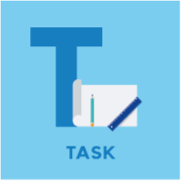
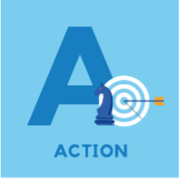
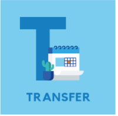

STARR(T) Method
Learning outcome
You are now familiar with the STARR(T) method by applying it step by step to your own situation.
Question 1:
 |
 |  |  |
 | |
|---|---|---|---|---|---|
| During my last year in high school, I was part of a group project for geography course. Our task was to observe the changes of the moon over 3 months and take notes describing the changes and attaching photos. Halfway through the project, two team members dropped out, leaving the rest of us behind schedule and struggling to complete the work. | As the project deadline was approaching, I took the initiative to become a project leader and reorganize the group and ensure that we met the requirements. My goal was to redistribute the workload fairly and motivate the remaining members to stay on track. Also, I warned the teacher that now there are only 4 group members instead of 6 and other groups remained bigger than ours. | I checked what we have already done and what remaining tasks we still have and reallocated tasks based on each team member’s strengths. I also set our own deadlines, which I checked weekly to ensure we are on track or if we need to hurry up to monitor progress. To ensure clarity, I made a shared document outlining everyone’s responsibilities and made myself available in case team members had any questions. | Despite the challenges, we completed the project on time and received a high grade. Our teacher was really excited as we managed to do everything on time although we had fewer team members than others and the project was big and long, we succeeded. | Participating in the group project was a useful learning experience. The sudden departure of two team members created a significant challenge, initially creating stress and uncertainty. However, this experience taught me the importance of adaptability, clear communication, and team management during challenging situations. I now feel more confident handling unexpected setbacks and leading a team effectively. | The skills I developed during this project have been highly useful and now I'm applying them to other aspects of my academic and personal life. During working on group assignments, I'm using structured planning and open communication to achieve efficient teamwork. I'm trying to be more flexible and improve my adaptability and problem-solving skills to manage unexpected issues and meet deadlines. In the next period, I want to become a project leader and using this experience I can set clear goals and make collaboration effective and efficient. |